ドクショル講演会2015
平成27年11月8日ドクショル講演会が、学外者15名・学内者39名の計54名の参加者を得て行われました。
●日時：平成27年11月8日（日）１３：３０〜１５：３０
●講師：中川 律子（さかさパンダサイエンスプロダクション代表）
●題名：よもう！あそぼう！かがくの本〜科学の魅力を伝える読書活動〜
●参加者：54名（学外の方15名＋学内の方39名）
◆開会の挨拶◆
まず、最初に岡山理科大学図書館長山本英二先生より開会の挨拶があり、その後、中川律子先生の講演会が始まりました。
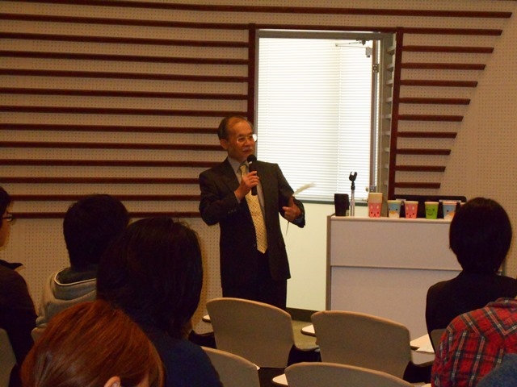
◆講演・実演◆
科学の本の読み聞かせの会「ほんとほんと」の紹介があり、その後は実際の読み聞かせの方法の説明がありました。
続いて、エビングハウスの忘却曲線（人は1日後には約75％のことを忘れている）の話の後、実験・工作などを読み聞かせに組み合わせてより印象深く、参加者の記憶に残す方法などの説明がありました。
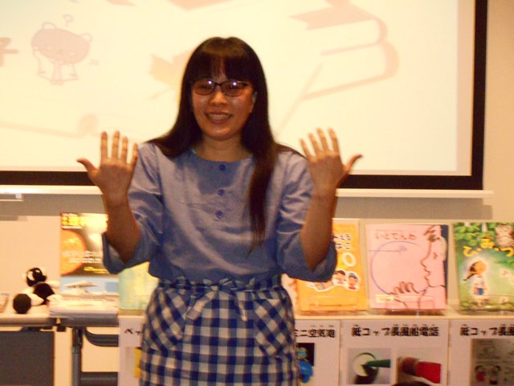
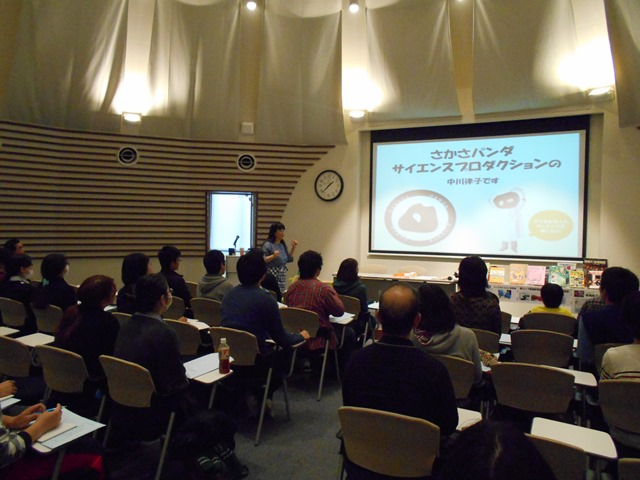
「くうき」という本を例に、実際の読み聞かせの実演の後、「1リットルの牛乳パックの中の空気の重さは、A．0グラム、B．1円玉くらい、C．小さいミカンくらいの中のどれ」と言うクイズを出して、参加者の興味を引くなど実際に行っていることも実演されました。（正解はB）
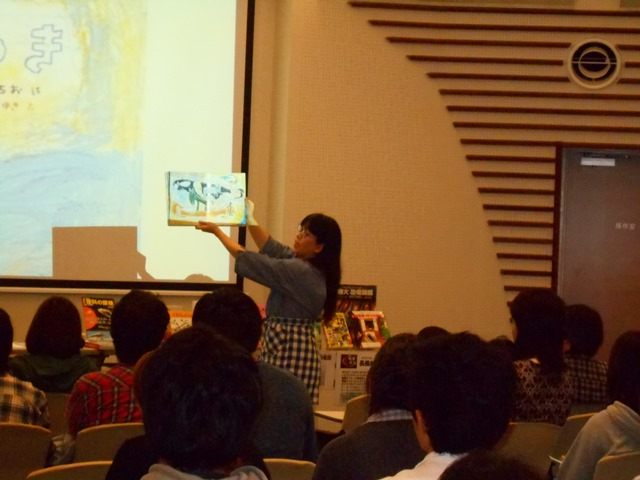
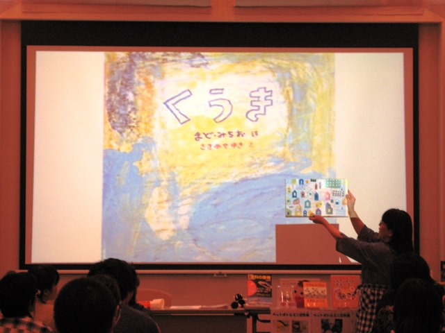
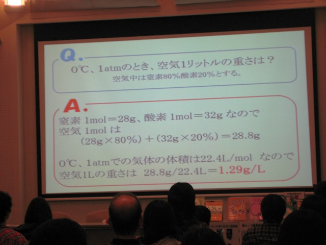
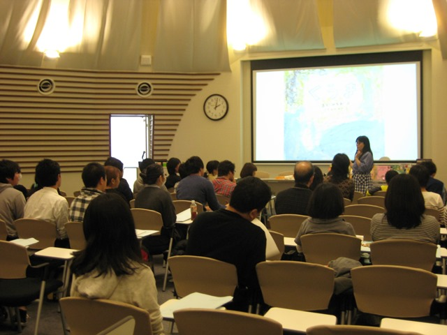
この他、小さい空気砲（ヤクルトの容器＋ゴム風船）や長風船電話（紙コップ2つを細長いゴム風船でつないだもの）を参加者全員で組み立てたり、段ボール箱の空気砲の穴の形を参加者の要望にこたえたイラストの形（へびと□四つ）に切り抜いて実際に空気砲を発射してみて、発射された水蒸気がどんな形になるかを見てみたり（どんな穴の形でもドーナツ型になるそうです）するといった空気に関する実演や、新聞紙ドームなどそのほかの空気に関する実演例などが紹介されました。
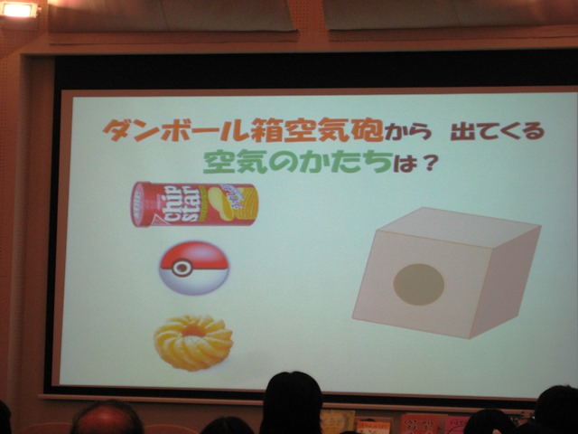
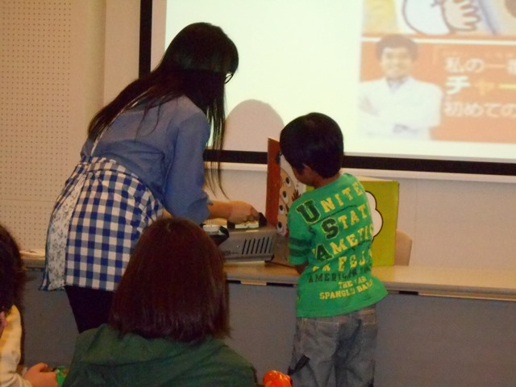
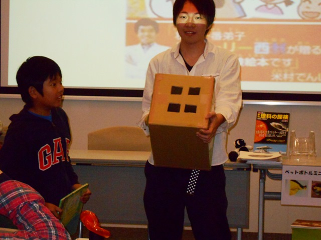
空気砲や長風船電話を組み立てた際には、小さい子供から、大学生、大人まで一生懸命に取り組んでおり、出来映えを講師の先生からほめられたりして、会場は盛り上がっていました。こうしたことで、忘却曲線に負けない記憶を皆植え付けられたことでしょう。
このような和気あいあいとした雰囲気の中、講演・実演が終了しました。
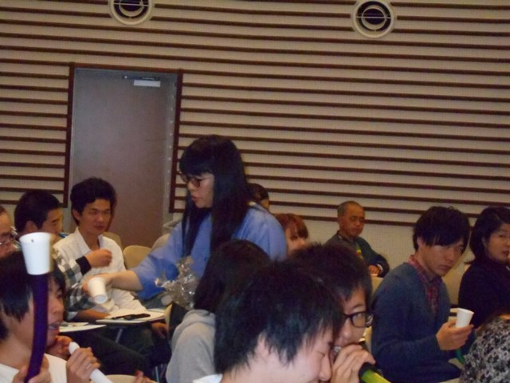
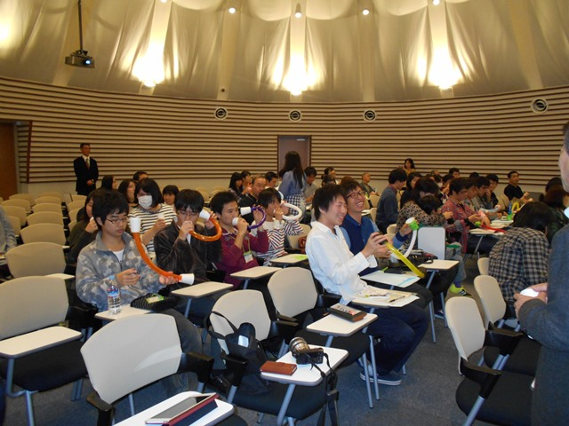
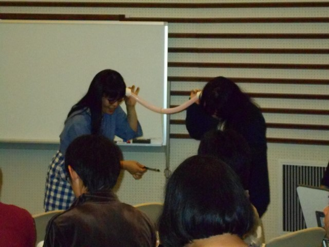
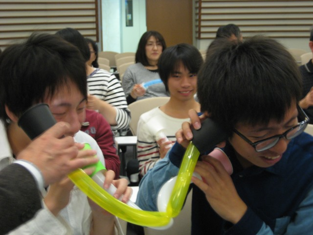
◆図書館クイズ記念品贈呈式◆
講演の後は、事前にインターネットなどで行われていた毎年恒例の'図書館クイズ'の成績上位者への記念品贈呈式が行われ、出席していた学外の方4名（含、講師の中川先生）・学生5名に拍手の中、記念品が贈られました。
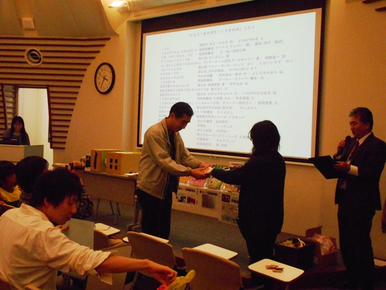
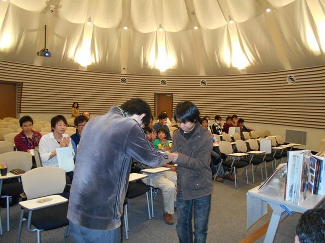
|